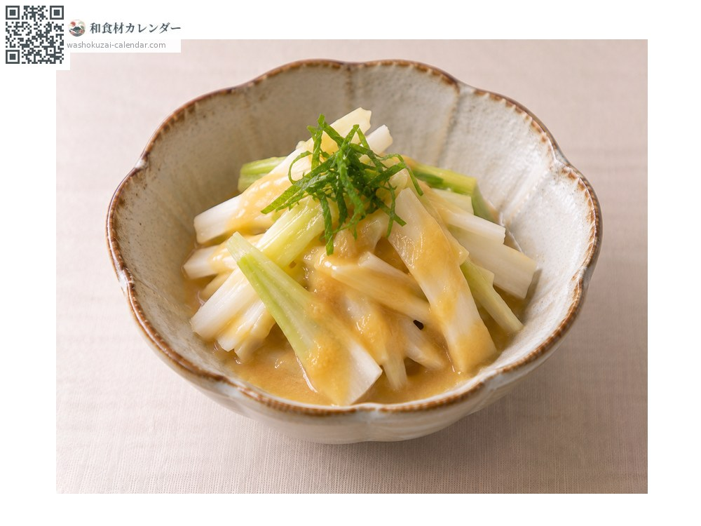
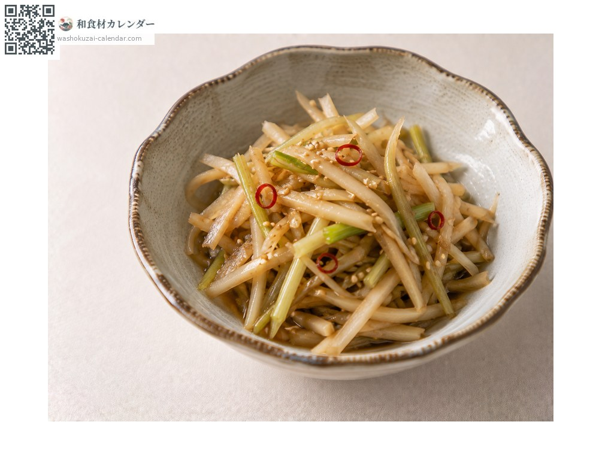
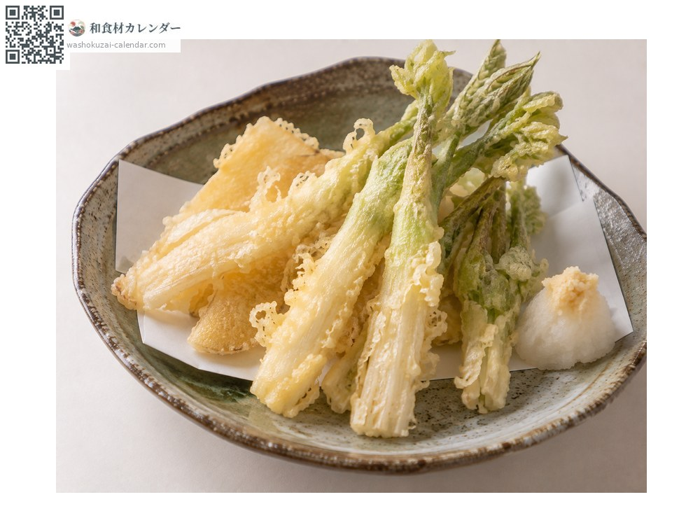
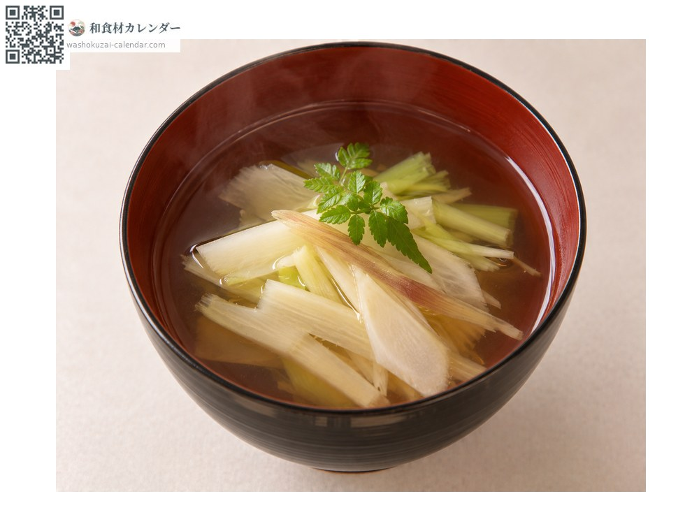

野菜
ウド
うど
別名・別表記独活、udo
旬は3月・4月・5月

旬の時期
1月
2月
3月
4月
5月
6月
7月
8月
9月
10月
11月
12月
旬出回り
調理法

酢味噌和え
皮を剥いて短冊に。

きんぴら
皮を使って作ると無駄がない。

天ぷら
穂先を揚げる。

汁物
香りを楽しむ。
選び方
茎が白くまっすぐで、産毛が密なもの。太さが均一なもの。
保存方法
光に当たると硬くなる。新聞紙に包んで冷暗所へ。切ったら酢水にさらす。
主な産地
豆知識
日光を当てずに地下で育てる「軟白栽培」が主流。東京・立川周辺で盛んに作られる。